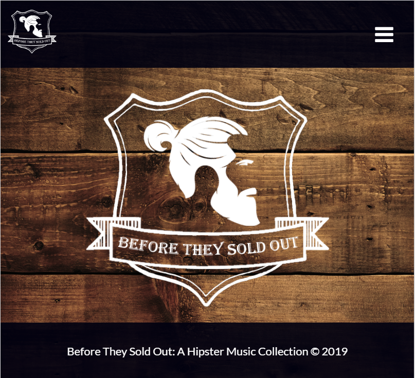
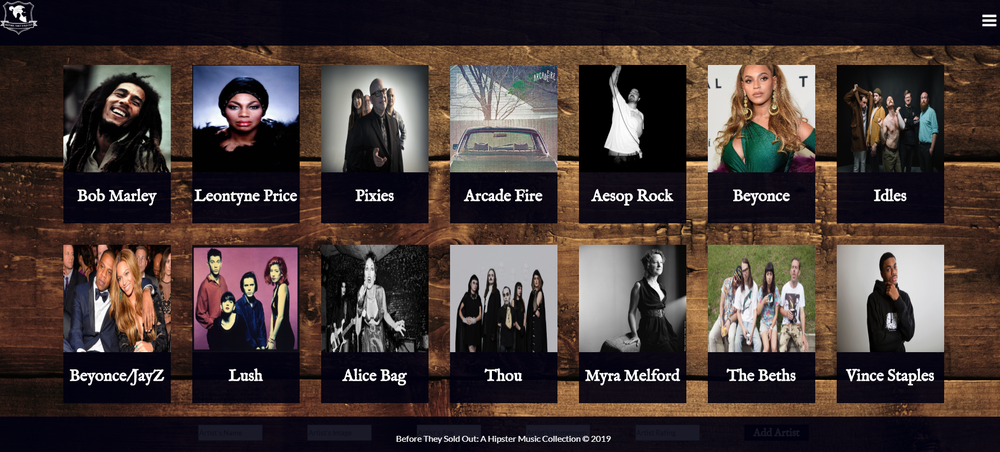
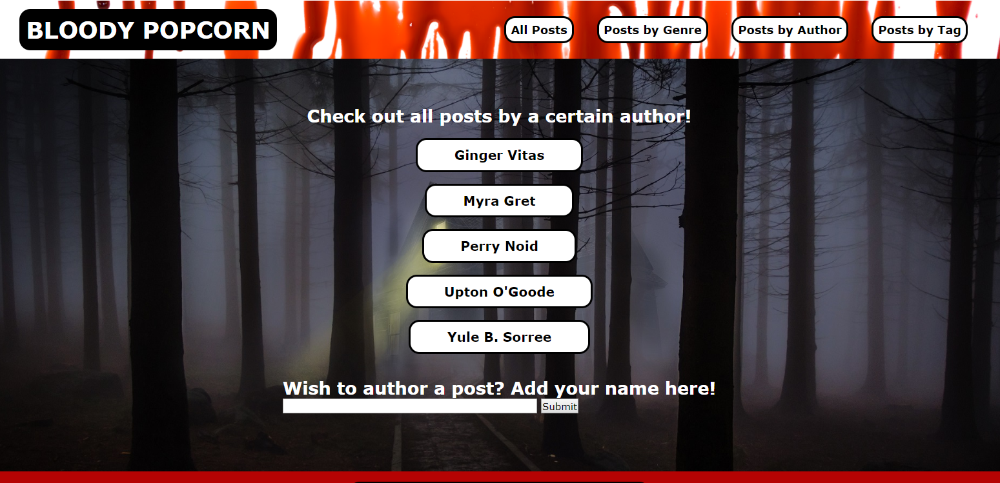
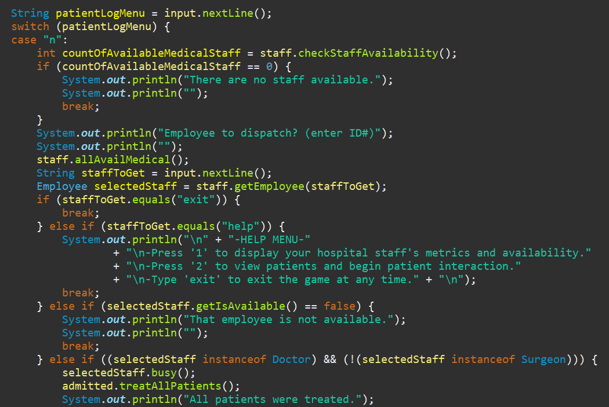
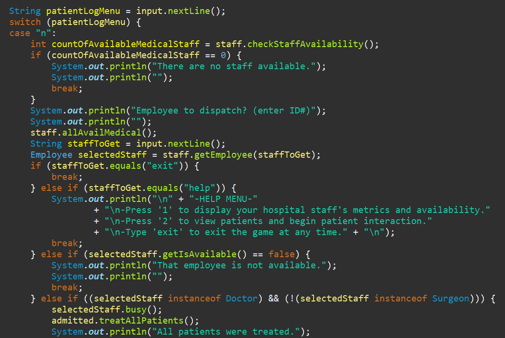

I've experienced a decade of non profit success, strengthening relationships between organizations and community stakeholders, volunteers and donors. Once I realized that building applications and software with code meant that I could infinitely increase my impact in my community, I jumped into coding and haven't looked back. I am looking to challenge the status-quo with a cool team while building products that improve lives.
(When I'm not trying to change the world, I like to watch low-budget horror and sci-fi movies with a nice cup of decaf coffee and pretend like I know how to knit in the round.)“The more I live, the more I learn. The more I learn, the more I realize, the less I know.” ― Michel Legrand
Java • Spring • Hibernate • JPA • JavaScript • MVC • HTML5 • CSS3 • Flexbox • Grid • TDD • Agile (Scrum) • Object Oriented Programming • AJAX • JSON • Restful APIs • Responsive Design / Mobile • SQL • Relational Databases • Source Control / Git
Pitch for Good was born from my experience recruiting, training and managing over 10,000 volunteers. Volunteers are highly skilled and often desire to make a lasting impact using their specialized knowledge and experience. Unfortunately, non profit program managers simply don't have the time to create the kind of volunteer projects that would appeal to individuals with specific skills. Pitch for Good bridges that gap in two ways: nonprofits can search for interested volunteers by specific skill, and volunteers can create volunteer project ideas that they wish to complete and pitch these ideas directly to their favorite nonprofits.
Pitch for Good is a single-page application rendered with JavaScript. API was built with Java.
See the project on GitHub.Before They Sold Out is a single-page album collection application. Users can add albums, artists and songs along with tags and comments for each element.
Before They Sold Out is a single-page application rendered with JavaScript. Business logic was built in Java using an H2 database.
See the project on GitHub.  Bloody Popcorn is a horror movie blog site built with Java and JavaScript over the course of a weekend.
See the project on GitHub. Nightmare Hospital is a simple Java console game built over 1 weekend. You are the Administrator of High Street hospital. Patients are randomly being injured by a lurking vampire! Keep the patients alive by dispatching surgeons and doctors while trying to catch the vampire before all is lost...
Nightmare Hospital was built with test-driven development.
See the project on GitHub. 

Let's chat!
SEND A MESSAGE